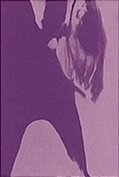
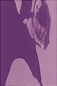

Ero Guro Nansensu: A Ambiguidade desoladora e fascinante de uma arte psicologicamente sinuosa

Os japonêses são uma espécie de seres humanos conhecidos pelos seus olhos cerrados e por morarem em uma ilha banhada pelo orceano pacífico. os principais hobbies nacionais mais comuns
dos japoneses são: bushido, brandar katanas contra bambums, brandar katanas contra katanas, brandar katanas contra baleias emergentes no mar, seppuku, comer lactobacillus vivos (eca) e
também pousar seus aviões em bases inimigas com um precisão assombrosa. além de brandar katanas contra aviões inimigos. já falei sobre brandar katanas e privadas eletronicas? bom, isso
pouco importa agora. o cerne desde artigo é elucidar questões culturais e históricas que levaram essa incrível nação a criar um dos gêneros de terror psicologicamente mais aterrorizantes
e perturbadores de todos os tempos. o Ero guro (ainda não nansensu) que se trata de uma fusão hedionda e diabolica entre o erotismo, fetichismo, violencia extrema e elementos grotescos e
repulsivos, muitas vezes tabus são desconsiderados nessas obras, tornando-a ainda mais e visceral e livre de grilhões. e não é atoa que essas obras são capazes de evadir mentes e evocar
uma combinação de sentimentos ambiguos que se entrelaçam desejos horripilantes. existem uma série de questões psicologicas envolvidas que orbitam o ero guro nansensu que serão melhor
desenvolvidas ao longo deste artigo, por hora o aprofundamento histórico relativamente breve do ero guro nansensu é fundamental para o afunilamento do assunto até a psicologia.
Hentai do periodo Edo
A Terra do Sol Nascente figura entre os países mais fetichistas do mundo, ocupando a quarta posição em consumo de pornografia, mas também é detentora do título de país com a menor taxa de natalidade. Essa aparente dicotomia, longe de ser apenas um fenômeno atual, dialoga com raízes históricas profundas que remontam a séculos de repressão social e expressões artísticas subterrâneas. Apesar de a era Edo (séc. XVII–XIX) ter coibido referências políticas em obras de arte através de censuras estritas impostas pelo xogunato Tokugawa para manter a ordem moral e hierárquica, a arte conhecida como shunga (gravuras eróticas) ganhou amplo espaço no comércio de Edo, alcançando admiradores de diversas classes sociais. Porém, algumas gravuras eróticas, violentas e completamente pirotécnicas começaram a surgir das mãos de antigos mestres do ukiyo-e, como Tsukioka Yoshitoshi, Utagawa Yoshiiku e figuras proeminentes como Katsushika Hokusai, conhecido por suas representações intrépidas de tentáculos e cenas marítimas surrealistas; Kawanabe Kyōsai, com suas concepções demoníacas e infernais; e Utagawa Kuniyoshi, mestre em imagens fantasmagóricas, monstros e batalhas grotescas. Essas obras são consideradas os primeiros exemplos de ero guro, termo criado a partir das palavras estrangeiras erotic e grotesque. Sem dúvida, foram heranças que serviram de inspiração para a ascensão posterior do gênero — principalmente as gravuras que surgiram em 1896 da parceria entre Yoshitoshi Tsukioka e Yoshiiku Utagawa, conhecidas como muzan-e, tidas popularmente como o primeiro exemplo de ero guro.
Explosão grotesca I

A efervescência cultural do Japão começou em meados de 1926, no final da era Taishō e início da era Shōwa. Durante esse período, o país passou por uma rápida modernização e também foi ativamente ocidentalizado, influenciado por influxos de ideias europeias-como o dadaísmo e surrealismo- e americanas- radiofusão, bares, cafés, salões literários (onde intelectuais discutiam Freud e Nietzsche)-, que remodelaram estruturas sociais e econômicas, culminando em uma transição abrupta que fragmentou as tradições confucionistas que, de súbito, transverteu a identidade japonesa em uma afluente amálgama cultural. Tudo isso em meio à Grande Depressão, desigualdade social, conflitos culturais, alienação urbana e outros fatores que configuraram o complexo cenário do Japão naquela época. A era Taishō, em particular, foi marcada por um liberalismo cultural chamado "Taishō Democracy" que proporcionou maior liberdade de expressão. Todas essas vicissitudes somadas resultaram em um ambiente propício para dar à luz ideias cada vez mais criativas e ousadas, com tendências culturais ligadas ao hedonismo, fetichismo e à liberdade sexual. Muitos teorizam que essa sexualidade subversiva da época surgiu como uma ferramenta transgressora para uma sociedade que ainda possuía, em certo nível, pensamentos enraizados desde a era Meiji, onde a expressão da sexualidade era vista como inadequada. Essa mesma tendência cultural não se limitou a subverter somente a sexualidade, mas também valores morais e éticos. Em 1928, a revista Shin-Seinen ("Nova Juventude") publicou o conto Injū (陰獣), que foi concebido pela mente visionária e grotesca de Edogawa Ranpo, que ilustrava quase que de forma sobrenatural o que agora, sim, podemos chamar de Ero Guro Nansensu (nonsense), incorporando elementos de mistério psicológico, deformidades e horror erótico que pavimentariam o caminho para autores subsequentes como Yasunari Kawabata, Jun'ichirō Tanizaki, Toshio Saeki e Suehiro Maruo, cujas obras exploravam, sob a ótica psicanalítica, a dualidade entre beleza, perversidade interna e depravação psíquica que transcendia tabus ancestrais.
Extra, extra!! uma mulher furtou um pênis e tentou chupa-lo da forma errada.
Em 1936 um caso repercutiu muito japão devido a sua natureza grotesca e peculiar. a notícia era sobre um casal que passou nove dias em um motel tomados por um frenesi sexual intenso e fetichista, resultando na morte de uma das pessoas, que nesse caso era Ishida Kichizo de 42 anos pai de família, dono de um restaurante e dito como uma pessoa boémia. Ishida foi estrangulado até a morte com um cinto de kimono feminino e teve seu penis e testiculos arrancados, em seu corpo havia uma assinatura, como se fosse uma obra de firmada por um artista. essa "artista" (entre aspas porém de fato tinha aptidão para tal) era Abe Sada a amante inconformada de Ishida. Abe Sada nasceu em 1905, em uma família de classe média com uma criação aparentemente comum. Na escola ela era vista como preguiçosa porém se destacava em relação a canto e instrumentos musicais. aos 14 anos Sada sofreu abuso sexual, e o autor não sofreu qualquer tipo de punição. A falta de amparo e de justiça fizeram Sada se rebelar e virar uma delinquente juvenil, praticando pequenos furtos e atos de vandalismo. Como resposta o apedeuta progenitor da Sada resolveu, literalmente vender sua própria filha a um bordel (karayuki-san prática considerada comum na época) logo após ela foi transferida para uma okiya (estabelecimento para gueixas aprendizes) e após uma extensa lista de escolhas erradas combinadas com má sorte Abe Sada finalmente virou uma prostituta com sífilis escrito em letras miúdas no curriculo. durante a vida como meretriz, ela conheceu vários homens e se apaixonou algumas vezes, porém ela não obteve sucesso em ser assumida devido a sua profissão. alguns de seus ex amantes relataram que Sada era extremamente promiscua e difícil de satisfazer sexualmente, esses relatos levam a crer em um possível quadro de ninfomania. Em algum momento Sada conseguiu largar a vida da prostituição e começou a trabalhar como auxiliar de cozinha no restaurante do desafortunado Ishida Kichizo que rapidamente foi pego pelas bolas e começou a se relacionar com Sada. Ishida realmente tinha o molho, e conseguia satisfazer a Ada Sada como ninguém antes tinha feito, os dois rapidamente entraram em sincronia, fornicando monomaniacamente porém essa sincronia se limitava somente ao sexo, Ishida não tinha pretensão alguma em asssumir Sada. Ao perceber que estava, novamente passando pela mesma situação Sada entrou em um estado de ruminação, não queria de forma alguma ser rejeitada novamente. Ao ir assistir uma peça de teatro, Sada ficou obcecada por uma cena onde uma gueixa esfaqueia seu amante para não ser deixada, foi alí que ela decidiu fazer o mesmo com Ishida. porém ao confrontar Ishida com uma faca, ele a confrontou de volta com uma ereção, fazendo Sada desistir por hora e elevando ainda mais o nível de devasidão dos dois com multilações intimas envolvidas. A ereção de Ishida havia salvo sua vida por um tempo, até a Sada tentar matar ele novamente, dessa vez com exito. Sada foi vista fazendo compras com o penis do Ishida na bolsa, e em algum momento tentou fazer sexo e chupar o pênis desfalecido.
Explosão grotesca II
A ampla cobertura da mídia sobre o caso Sada Abe e o grande volume de mídias grotescas, como livros, músicas, mangás abriu os olhos das autoridades para aquilo que poderia ser um movimento cultural noscivo, e uma evidente ameaça para a moralidade pública e a estabilidade social. o ministério do interior decidiu reprimir e confiscar alguns livros por culpa do seu conteúdo que era considerado inadequado. porém o movimento artistico ainda não foi completamente erradicado. Em vez disso, ele submergiu para as sombras da cultura underground, onde artistas e escritores continuaram a explorar temas de erotismo grotesco de forma clandestina, muitas vezes circulando obras em edições limitadas ou através de redes informais. Mas com o fim da Segunda Guerra Mundial em 1945 e a subsequente ocupação aliada liderada pelos Estados Unidos, sob o comando do General Douglas MacArthur, o cenário cultural japonês sofreu outra transformação radical. As forças de ocupação impuseram sua própria forma de censura, confiscando novamente, materiais obscenos ou potencialmente subversivos, incluindo muitos textos e imagens associados ao Ero Guro, com o objetivo de promover uma "democratização" e uma reconstrução moral alinhada aos valores ocidentais. No entanto, paradoxalmente, a nova Constituição japonesa de 1947, influenciada pelos ocupantes que ironicamente, garantiu liberdades de expressão que, com o tempo, possibilitou uma gradual liberalização que fez o Ero Guro renascer das cinzas , agora adaptado ao contexto pós-guerra. O movimento ressurgiu em formas como os "pink films" (eiga pinku), produções cinematográficas de baixo orçamento que mesclavam erotismo explícito com elementos grotescos e narrativas transgressoras, frequentemente explorando temas de violência sexual, fetichismo e alienação social em uma sociedade traumatizada pela derrota bélica e pela rápida reconstrução econômica. Artistas como Toshio Saeki, cujas ilustrações oníricas e perturbadoras capturavam visões de corpos desmembrados e atos sexuais bizarros, e Suehiro Maruo, que incorporava influências do horror mangá com toques de sadomasoquismo e deformidades, representaram essa revival, elevando o Ero Guro a um status de arte cultuada. Maruo, em particular, com obras como "Mr. Arashi's Amazing Freak Show" (Shōjo Tsubaki), reinterpretou o nonsense grotesco através de lentes psicanalíticas, ecoando os precursores como Ranpo e Tanizaki, mas adaptando-os a uma era de consumismo e mídia de massa.
A wide Reflection about intellectual Arrogance
Recently, I was thinking about a sentence that was said by a weird philosopher with a weird moustache who was known for saying weird things. One of those weird things was, "It is necessary to have chaos inside of yourself to create a beautiful dancing star." However, in my case, instead of a constellation in its magnificence and glory, I'm sensing a stroke or a brain aneurysm. I think that what will come of me is not something good; the words are jumping from my mind and falling on my keyboard to escape the mental apocalypse of my boiling brain at this moment. I have concluded that a person whose life experiences guided his personality environment as a cowardly person, and who has perceptive thoughts about life, constitutes a pathological entity fated to failure—especially when that person already has a consolidated consciousness about the inevitability of his own condition: to live an entire life in a spiral of wishes without ever being able to do anything. I'm my own jailer, enclosed between the willingness to act and the absolute mental paralysis in a relentless overlap.

I avoid any kind of challenge, never impose myself on anything, and am completely insecure. I sought cynicism as a way to mask my shameful flaws, such as intellectual arrogance, cowardice, and fear of failure. I use it constantly to escape responsibilities, cowardly discard my ambitions, and soften the impact of constant failures in my life.


 
